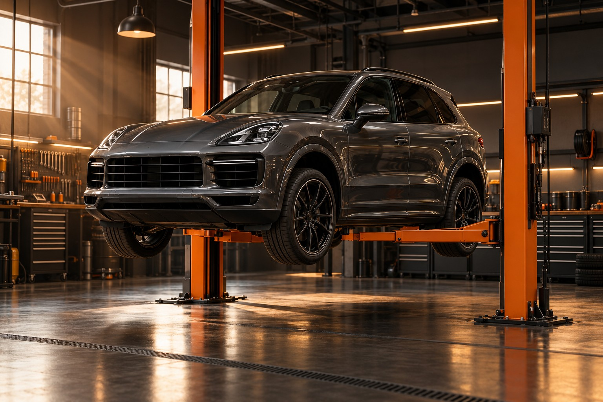

Стук в подвеске?
Горит ошибка?
Найдём причину.
Вернём в строй.
Разберёмся в причине, объясним, что требует ремонта, и согласуем стоимость. Диагностика, подвеска и шиномонтаж — в одном месте.

с исправной машины.
Что беспокоит автомобиль?
Разберёмся по пунктам.
Выберите направление, посмотрите состав работ и ориентировочную стоимость.
Ориентировочные цены для концепции сайта. Итоговая сумма зависит от автомобиля и согласуется после осмотра. Запчасти отдельно.
От первого вопроса
до следующей поездки.
Выбор времени
Выберите услугу и удобную дату. Подготовьте заявку с контактами и моделью автомобиля.
Диагностика
Сначала — осмотр и поиск причины. Симптомы помогают определить направление проверки.
Согласование
Обсудите перечень работ, запчасти и итоговую стоимость до начала ремонта.
Результат
Уточните, что заменено, какие рекомендации остались и когда нужен следующий осмотр.
За каждым звуком —
конкретная причина.
Стук на неровностях, вибрация на скорости или загоревшийся индикатор — повод проверить автомобиль. Одна и та же неисправность может проявляться по-разному.
Хороший ремонт
начинается с вопросов.
Несколько деталей, которые помогут подготовиться к визиту.
Я не знаю, что сломалось. Какую услугу выбрать?
Выберите диагностику и опишите симптомы при обращении: когда появился звук, при какой скорости ощущается вибрация, какой индикатор загорелся. Не нужно самостоятельно определять неисправную деталь.
В прайсе указана окончательная цена?
Нет, это ориентировочная стоимость работы. Итог зависит от модели автомобиля, сложности доступа и объёма ремонта. Стоимость запчастей учитывается отдельно. Цены в этой концепции требуют подтверждения автосервисом.
Что входит в сезонный шиномонтаж?
В указанный ориентир входят снятие и установка четырёх колёс, демонтаж и монтаж шин, балансировка. Ремонт дисков, датчики давления и дополнительные материалы согласуются отдельно.
Можно ли приехать со своими запчастями?
Такую возможность стоит заранее согласовать с сервисом. Перед покупкой проверьте совместимость детали по VIN и уточните условия гарантии на работы.
Выбранное время сразу бронируется?
В этой версии сайта можно подготовить заявку и сохранить напоминание. Передача заявки и реальное расписание автосервиса ещё не подключены. Время визита необходимо подтвердить отдельно.
Ваш автомобиль.
Ваше удобное
время.
Выберите направление и желаемое время. Следующим шагом — контакты и модель автомобиля.
Заявка подготовлена
Передайте заявку автосервису и подтвердите время визита. Бронирование ещё не выполнено.